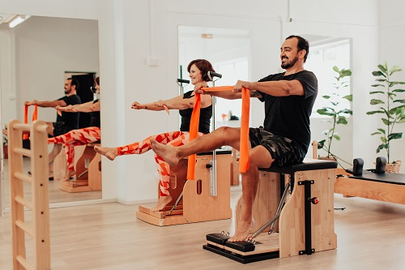
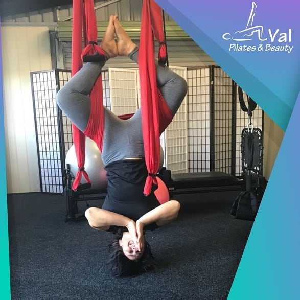

Introducing Vida Pilates
Vida Pilates doesn't just change bodies, it transforms lives.

Vida Pilates is an inclusive, accessible and fun community that is open to everyone, of all fitness levels. Located in the heart of Rockdale, only a few steps from the station, our classes are private or semi-private and are customised and focused to maximise your results. We offer a dynamic mix of mat and equipment classes to suit your lifestyle including Reformer, Chair, Cadillac and Ladder Barrel, and if you are still not ready to come back to in person classes, online classes are also available for your convenience. We believe that Pilates is not about sculpting your ‘summer body’, it is about improving your lifestyle by increasing your strength, flexibility and reducing any injury related pain.
Val Padilha

Val’s journey to becoming a Pilates instructor began 10 years ago when she completed her bachelor’s degree in Physiotherapy and post graduate degree in Pilates in Brazil. She has been working as a Pilates instructor since then. She’s passionate about body movement, and believes that being active is the key to a long and healthy life.